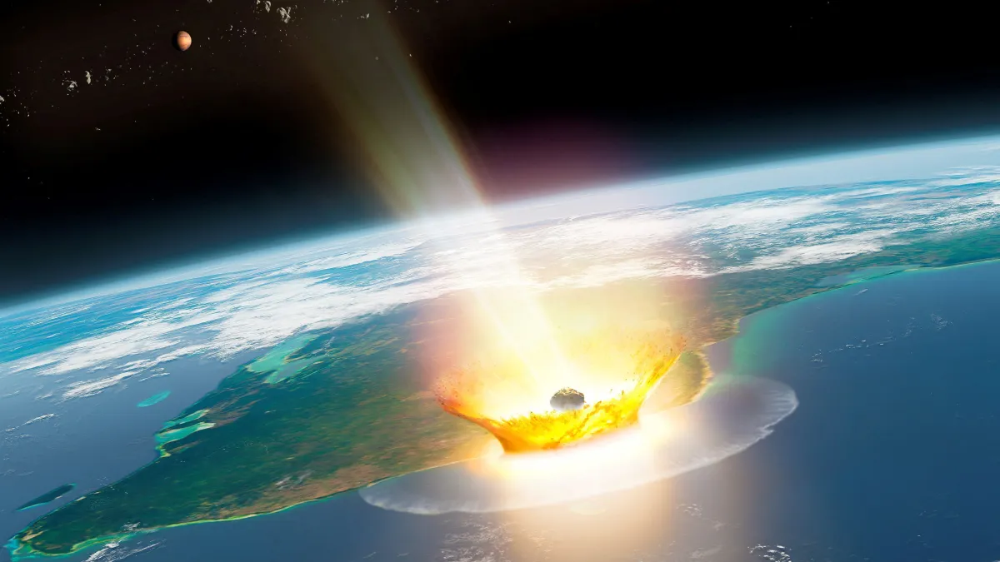
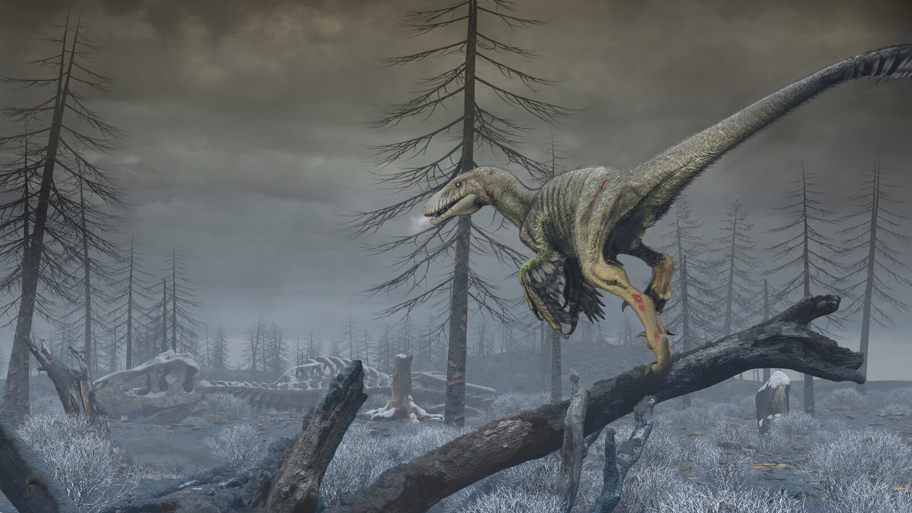
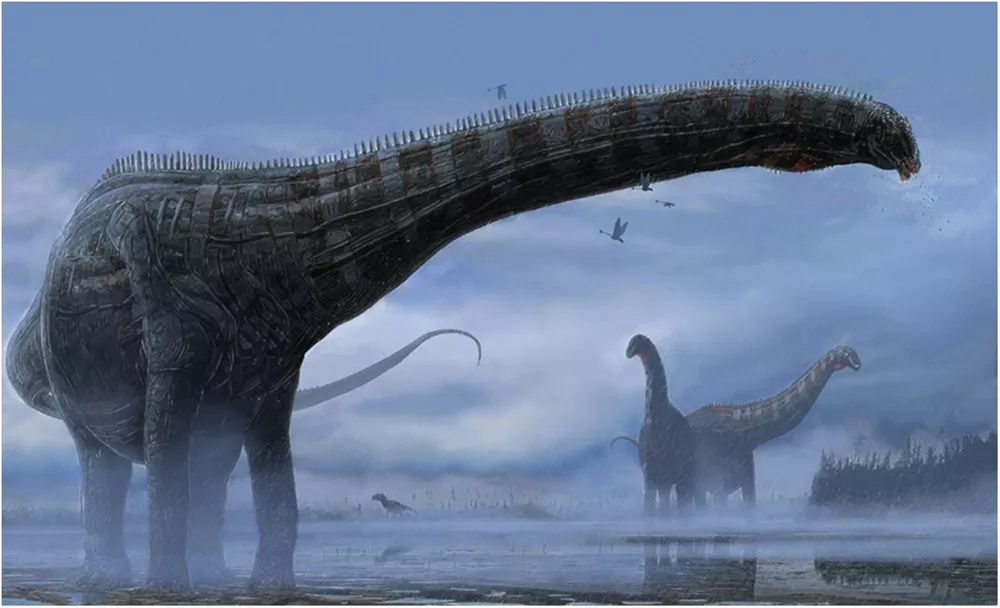

A Extinção: Teoria Mais Aceita
Imagine você, em um período onde não existiam casas, carros, celulares, até mesmo cães. Onde o mundo era completamente diferente do que conhecemos hoje, os continentes eram abissais, os animais? Colossais. Répteis voadores maiores do que qualquer ave que já tivemos o prazer de ver em vida, dinossauros maiores do que uma casa média brasileira, até mesmo as aves eram diferentes. Agora imagine, que em um dia comum neste ambiente assustador, você olha para o céu logo após acordar, como costuma fazer todo dia, mas dessa vez vê algo que vai mudar não somente a sua vida, mas tudo que você já conheceu. Você avista uma bola de fogo rasgando os céus e, com uma colisão ensurdecedora, tudo muda. Em uma fração de segundo, um brilho intenso corta o horizonte, seguido por um estrondo de romper os tímpanos que quase arranca seus sentidos. O chão treme sob você, como se o próprio planeta estivesse se despedaçando. Segundos depois, você avista tsunamis de dimensões incompreensíveis vindo na sua direção, enquanto bolas de fogo caem dos céus, grandes incêndios e caos se instauram. Isso é, no mínimo, apocalíptico, mas de acordo com a teoria mais aceita sobre a extinção dos dinossauros, foi exatamente assim que tudo aconteceu.
A Teoria do Impacto do Asteroide
Essa é a teoria mais famosa que visa explicar o que aconteceu com o mundo há 66 milhões de anos atrás, quando um asteroide com mais de 10 quilômetros de diâmetro atingiu o que hoje é a península de Yucatán, no México. O asteroide que deixou uma cratera conhecida como Cratera de Chicxulub, com mais de 180 quilômetros de diâmetro, se chocou com o nosso planeta em uma velocidade assustadora, mais rápido do que uma bala. No momento do impacto, uma grande nuvem de poeira se levantou, incêndios começaram por todas as partes do mundo, terromotos inimagináveis e tsunamis com mais de cem metros de altura, mudaram toda a biodiversidade global. Com certeza um dos piores dias da história do planeta.
Apesar do impacto ter sido, sem dúvidas, devastador, os dinossauros não foram extintos de uma vez. Na verdade o que terminou de varrer a vida dessas criaturas foram os impactos pós-colisão. A camada de poeira que cobriu a atmosfera por décadas foi uma das principais responsáveis por extinguir os grandes animais daquela época, além das mudanças climáticas causadas pelo impacto, que mudaram completamente a vida dos seres que tiveram a oportunidade de sobreviver ao asteroide. Teorias sustentam que um inverno de 15 anos se sucedeu após o impacto, graças ao levantamento de poeira que teria ocorrido devido ao impacto do asteroide, impedindo que a luz solar chegue com eficiência em solo terrestre. Sem dúvidas, um momento triste para os seres que dominavam o planeta naquela época. Em um dia, o mundo estava repleto de vida, dinossauros por todo lado, criaturas cujo o único objetivo era sobreviver. No outro, tudo aquilo acabou, extinções de espécies que nunca veremos, o fim para uma era do mundo, era essa conhecida como Período Cretáceo.
O inverno de 15 anos
Na década de 1980, os cientistas Luis e Walter Álvarez, pai e filho responsáveis por propor que a extinção dos dinossauros foi causada pelo impacto de um grande asteroide, sugeriram que o desaparecimento dos dinossauros foi provocado por uma mudança de clima após o impacto do asteroide, que cobriu o mundo de poeira. As simulações feitas recentemente por cientistas revelaram que, de toda a matéria suspensa na atmosfera, 75% era poeira, 24% enxofre e o resto fuligem. As partículas de poeira impediram a realização de fotossíntese por parte das plantas durante pelo menos um ano. O que afetou catastróficamente a vida.
O que podemos aprender com essa extinção?
A extinção dos dinossauros ressalta como a vida pode ser suscetível às mudanças climáticas, os dinossauros eram criaturas adaptadas a todo tipo de ambiente e, mesmo assim, encontraram seu fim diante a imprevisibilidade da vida. "Devemos olhar para o passado para compreender o futuro", que lição podemos tirar da extinção dessas criaturas magníficas? Nos dias atuais, estamos sofrendo com diversos impactos globais causados pelas mudanças climáticas, a nossa ignorância sobre o assunto passou dos limites e depois de anos as consequências vieram para nos assombrar. Sem dúvidas, o aquecimento global foi causado pela ignorância humana para com o ambiente que estamos inseridos, não respeitamos a natureza, não respeitamos o mundo e suas nuances, somos ignorantes, inconsequentes e hoje, algumas pessoas estão se esforçando para minimizar os impactos de nossas ações.

Pensando nisso, este projeto tem como um dos objetivos conscientizar as pessoas, apresentando-lhes a ODS da ONU. Os 17 Objetivos de Desenvolvimento Sustentável (ODS) foram estabelecidos pela Organização das Nações Unidas (ONU) em 2015 e compõem uma agenda mundial para a construção e implementação de políticas públicas que visam guiar a humanidade até 2030. Este projeto está inserido em dois dos 17 objetivos, a ODS 4, que trata de educação de qualidade, o objetivo desse site é provocar a curiosidades nos leitores, incentivar que eles estudem sobre esse mundo fantástico. O outro objetivo é o ODS 13, que se refere à ação climática, essa aba do site tem como objetivo conscientizar as pessoas acerca dos impactos causados pelas mudanças climáticas, assim como o ODS 13 da ONU.